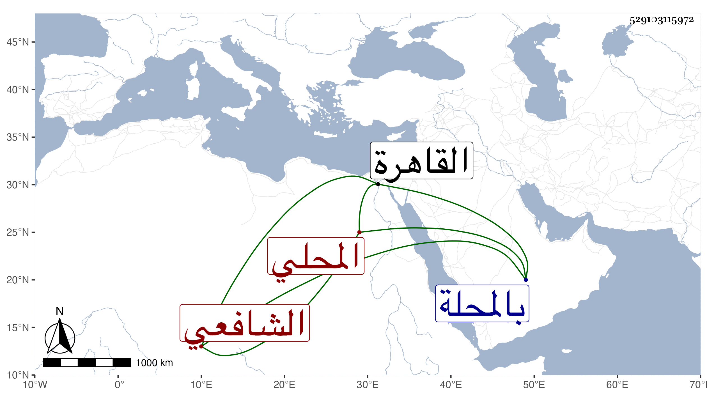

0902Sakhawi.DawLamic.ITO20230111-ara1.EIS1600.529103115972
Biography ID: 529103115972
92
محمد بن أحمد بن محمد بن أحمد بن عبد الرحمن الشمس بن ولي الدين المحلي الشافعي صهر الغمري الماضي أبوه ويعرف بصهر الغمري وبابن ولي الدين . ولد بالمحلة ونشأ فحفظ القرآن والمنهاج وعرضه ، وقدم القاهرة فقرأ على شيخنا البخاري وكذا قرأ على العلم البلقيني وسمع على جماعة من المسندين وتردد للناس وخطب بجامع أبيه وغيره ، وكان بارعا في الميقات تلقاه عن ابن النقاش مع مشاركة في الوثائق ونحوها وعمل مجموعا فيما يحرم ويباح من السماع أطال فيه ثم اختصره ولم يكن بالماهر ، وقد أخذ الميقات عنه جماعة ومات في حياة أبيه ليلة رابع عشرى شعبان سنة ثمان وستين عن إحدى وأربعين سنة رحمه الله وإيانا .
